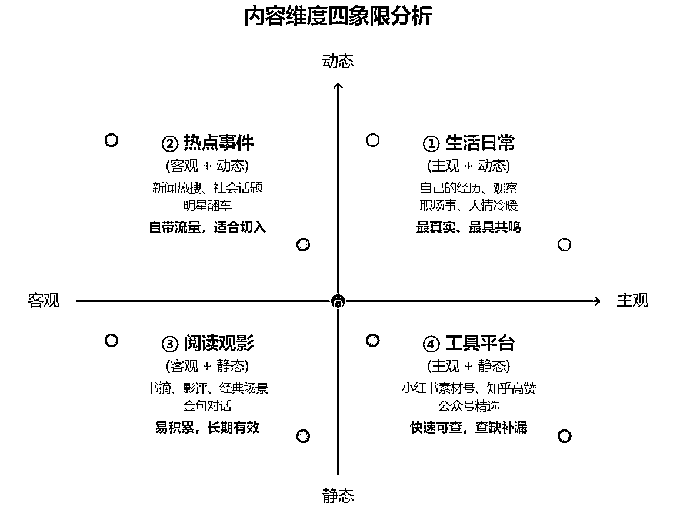

来源：https://qa00wmwke59.feishu.cn/docx/L9PhdctyRogujDxLjwUcwiVhn02
大家好，我是余小欢。
我是一名90后宝爸，退伍军人，主业国企，副业自媒体。
做自媒体一年，我死磕AI＋公众号，终于做出40w＋GMV的成绩。
这个成绩并不算优秀，但对于我这样的普通人来说，已经算创业路上成功的第一步了。
因为上一篇复盘贴，
很多小伙伴想了解一些有关公众号和AI写作的基础知识，
所以我花了半个月的时间，结合自己一年实战经验和整理笔记，总结出这篇资料。
这次的帖子很简单，总结为一句话来说就是：让你重新认识公众号的底层逻辑和AI写作的窍门。
只要你的执行力够强，愿意花一点点时间研究这个副业，公众号+AI写作绝对是一条值得普通人深挖的路。
全文纯干货，1.5w字。
另外，关于AI，我用的比较多的模型是Claude和GPT，这次先以GPT为例，因为它更适合新人上手。
我们开始。
很多人做公众号，一坐下来就想“我要写点什么”，然后盯着电脑一整天，最后憋出一句：“今天好像没啥灵感。”
但真相却是：不是你写不出来，而是你根本没选好“题”。
在公众号写作里，选题不是一句话的标题，而是一套完整的“预设系统”——它决定了你写给谁、为什么写、读者看了能得到什么。
从实操角度讲，选题要回答三个关键问题：
—— 是35岁职场妈妈？是刚毕业的小白领？是想搞副业的人？越具体越好。
—— 是引发共鸣？提供知识？唤起思考？还是促使转发和点赞？
—— 是你独特的经历、案例、观察？还是你对某个观点的反向思考？
实际上，一篇文章是否有人看，根本不取决于你写得有多“好”，而是这个选题能不能在读者的脑子里“点一把火”。
所以，一个好选题，应该是从“价值”出发，而不是从“灵感”出发。
我们在下一节会详细拆解“好选题背后的三重价值模型”：情绪价值、信息价值、目标价值。
你写得再努力，别人看不看，看的不是字数，是价值。
我写公众号写了一年，最有感触的一点就是：
一篇内容要有“价值感”，才能让读者停下来。
这三种价值，建议你写每篇文章前都过一遍脑：
人为什么会转发、点赞？不是因为你讲得多对，而是被戳中了。
有时候你一句话写对了，评论区一堆人说：“我就是这样！”
这就是高情绪价值。
比如这些我写过的选题，表现都不错：
读者看到不是“你讲得好”，而是“你在说我”。
这个时代，“有信息差”=“有价值”。
比如我写GPT写公众号、AI提示词、知识库实操、全托管项目……
很多人是第一次听、第一次接触，这种新东西+实操法，就是信息价值。
你要问自己：
“这篇文章里，读者能学到什么以前没见过的东西吗？”
也叫“解决问题的价值”。
这类选题通常有非常清晰的指向性，适合垂类账号或变现导向型内容。
比如：
目标价值的核心，是带读者“走一段路”：从不会→知道，从焦虑→清晰，从卡顿→解决。
👀 有些爆款选题之所以厉害，是三种价值叠加在一起。
比如：
“35岁职场妈妈裸辞后自学AI，3个月搞出月入3万的副业。”
这个标题同时满足：
这种立体感，是选题打动人的底层原因。
知道“什么是好选题”还不够，关键是：怎么“稳稳地”写出一个好选题？
这里我总结了六种常用、好用、反复验证过的“选题抓手”。每一个都可以独立拆解，也可以交叉组合使用。
读者最爱看的是什么？是“别人的故事 + 自己的影子”。
选题不必惊天动地，但要让人觉得真实，最好还能触发代入感，比如：
真实感+冲突感，就是天然的情绪入口。
大家都以为是A，你偏偏用逻辑告诉他是B。反转，就是流量。
比如：
反常识、反直觉、反经验，就是一种认知钩子。
数字能立刻增强“信任感”和“真实感”。
尤其是配合对比，能让人一眼看到“落差”，比如：
数字≠炫耀，而是给读者一个判断“值不值得看下去”的理由。
热点本身就有流量，用自己的视角切进去，就是差异化内容。
比如：
借势+共鸣，是获取初始关注最简单直接的方式。
精准人设，是快速建立信任感的第一步。
你越敢“点名”，就越容易让对方点开：
一句话解决一个“典型人”的“典型焦虑”，精准打击。
实用类选题建议开门见山：讲清楚“场景 + 解法”。
比如：
写内容就是“带人走一段路”，选题先告诉他“这段路是去哪的”。
这六个抓手，熟练掌握后，可以变成一种写作“直觉”：
一看到热点，就能提炼角度；
一翻生活，就能找到痛点；
一讲故事，就知道怎么结构化包装。
写公众号，最怕的不是写不出来，而是不知道从哪里开始写。
很多人熬夜写了一整篇文章，最后却发现数据很差。不是写得不好，而是选题方向压根就没对。
一定要牢记：一篇文章的选题是第一位！！！
一个可持续产出的作者，脑子里一定有一套自己的「选题工具箱」。这一节我们就来讲讲，怎么把“选题抓手”变成“选题方法”。
这个方法我一直在用，简单直接，适合所有阶段的创作者。
目的：借助大话题做流量切口。
举例：
热点：“李佳琦事件”
切口：“打工人为什么不再买单，是谁在偷走他们的底气？”
目的：从日常中提炼情绪或经验。
举例：
生活片段：“昨天加班到10点，还被老板骂没效率”
选题切出：“成年人的倔强：被骂了还不敢辞职，是谁教我们的？”
目的：用你会的知识，解决别人不会的问题。
举例：
技能：“我用GPT写文章1年”
输出：“不会提示词？试试我用过的这套写作公式，效率提高3倍”
想写一个题之前，先用这三个问题“筛一筛”：
有没有受众？这个话题是不是你“自嗨”？
→ 去搜一下关键词在知乎/小红书/公众号里有没有人提。
是不是烂大街的话题？有没有你独特的切角或经历？
→ 如果只是抄别人，那不如不写。
这个选题能引流吗？能变现吗？能沉淀IP标签吗？
→ 写内容之前要想好目的，否则发了也浪费。
每一个好选题，其实都能同时照顾到以下三个角色：
选题只从一个角度考虑，就容易跑偏；三个角度都照顾到，才是真正“有传播力”的内容。
✅ 总结一下：
下一节，我们就来拆一个更具体的部分：如何用这几个方法，做出结构清晰、读者爱看的“爆款原型”。
很多人写公众号文章有个通病：
👉 逻辑是断的，想起什么写什么；
👉 内容是堆的，有很多点，但没有主线；
👉 结构是散的，写完一看像“聊天记录”，口语化太重。
这样写出来的文章，就像一碗没煮开的粥，看着内容不少，却糊成一团。
而真正的高手，写文章像搭积木，每一块都对齐结构，每一个段落都服务主线。
我给你一个通俗的理解方式——函数式结构模型：
好文章 = 结构（骨架）× 情绪（血肉）× 节奏（节拍）
我们拆开说：
你要让读者知道：
你第一段在说什么，接下去会说什么，整篇文章要带我走哪条线。
比如这三种经典骨架：
文章结构清晰，读者才不会半路“掉线”。
写公众号，不是干讲道理，而是要让读者有感觉、有画面、有共鸣。
你可以通过这些方式“注入情绪”：
📌 举例：
“我在地铁站哭了15分钟，只因为那天领导说了一句话。”
这句一看就想点开，为什么？因为它有画面、有情绪、有隐喻。
文章就像一首歌，节奏对了，才有人愿意“听下去”。
在写作中，你要时刻注意节奏的变化：
就像跑马拉松，不是一路冲刺，而是张弛有度，有冲击也有缓和。
✅ 总结一句话：
结构是“走哪条路”，情绪是“沿路的风景”，节奏是“你走的步子”。
接下来，咱们具体拆解三种高频结构模型，并给出实用范例，帮你真正用起来。
大部分公众号文章，其实都可以归结为几种结构通用模板。
就像建筑有钢筋骨架，写作也有“基本型”，只要你会搭，什么选题都能套进去，写起来会轻松很多。
我建议新手作者先熟练掌握这3种结构：并列式、递进式、故事式。
观点1 + 案例1 + 小结
观点2 + 案例2 + 小结
观点3 + 案例3 + 小结
也可以简单记为：
👉 “123结构”——三个并列观点+对应支撑内容
是什么 → 为什么 → 怎么做
可简写为：
👉 “概念 → 逻辑 → 实操”
这是最常用的“干货表达结构”，尤其适合知识输出、方法教学类内容。
📌 小提示：
这类结构重点在于“承接感”强，一环扣一环。建议每一段开头加一句逻辑连接词（比如“第二个问题是…”、“既然如此，那我们该怎么办？”）
起 → 承 → 转 → 合
👉 一段小故事 / 一个冲突瞬间 / 一场心路变化
📌 写法建议：
✅ 总结一句话：
不会搭结构的人靠灵感，熟悉结构的人靠框架。
你有没有过这种写作体验？
开头写得很兴奋，中段就开始混乱，结尾又草草收尾。整篇文章看起来“情绪满了”，但“结构塌了”。
为什么会这样？
因为没有结构模板，就等于没有“内容容器”，写得再好也容易溢出来、跑偏了。
这节我教你一个原创结构公式，让你写文章像“搭积木”一样稳准快。
用一句话概括就是：
引子抓人 ➝ 主体推进 ➝ 观点补强 ➝ 结尾升华
我们继续来拆开讲：
开头的作用不是“解释你要讲什么”，而是制造停留 + 引起兴趣。
常见钩子类型：
一篇文章的点击率和前3句话，息息相关。
这部分可以套用前面学习的结构模型，并根据选题性质选择使用：
写的时候注意：每一个段落都要扣住主题，不要变成跑题的闲聊。
好文章不仅有观点，还有“证据”。
可以穿插在主体中，也可以在最后集中输出一组支撑材料：
📌 举例：
“知乎上有个高赞回答：‘副业不是干点别的赚钱，而是重新认识你是谁。’”
这类内容不是主菜，但会让整篇文章“更有质感”。
📌小贴士：这类素材要注意平时的积累，比如欢哥就有一个专门的金句素材库，后期也可以融入到AI知识库里随时调用。
结尾不要再写“所以……”，试试这几种更有力的方式：
一定要牢记：结尾是你留给读者的最后一句话，必须让他“愿意记住你”。
✅ 总结一下这个结构公式：
很多人卡在写作中段，开头写得还行，越往下越空，最后烂尾。
很多时候，不是你表达能力的问题，而是素材准备的不够！
你可以把一篇文章想象成盖房子：
选题是地基，结构是框架，素材才是“一砖一瓦”。
但问题是：素材太多，怎么判断“什么素材值得用”？
你讲的每一个观点，都要有“实锤”。素材就是“锤子”。
比如：你说“副业不能瞎做，要评估自身能力”，那你就需要补一个例子——哪种人瞎做之后失败了。
素材不能只是“信息”，还要有“情绪”。
比如：
“他凌晨1点坐在阳台上，盯着对面还亮着的办公室，一句话也没说。”
这一句胜过千言万语地“劝你别加班”。
素材还能帮你“塑造专业感”。
举个例子：
“根据清华大学的一项调研，有95%的上班族在35岁前经历至少一次职场焦虑。”
这种引用，会让文章“站得更稳”。
✅ 小贴士：
一个好观点 + 一个好结构 + 一个好素材 = 一篇好文章。
没素材，等于没血肉；乱用素材，就像五花八门往汤里丢料，味道全糟了。
“我好像没啥故事”“我不是名人”“我生活很普通”
——这是很多人写公众号时会产生的自我否定。
但你知道吗？好素材不是靠“编”，而是靠“发现”。
写作高手不是脑洞更大，而是他们更擅长“挖素材”。这一节我教你用“素材来源四象限”全面解决素材从哪来的问题。
我们可以把常见素材来源分为两个维度：
得出四类来源（如图）：

我们来逐个拆解。
素材来源：
举例：
写法建议：
记录碎片，保留真实细节。你的日常，可能正是别人不敢讲的心事。
素材来源：
举例：
写法建议：
别做“新闻复读机”，记得加入你自己的角度、观点、情绪，哪怕只是一句反问。
素材来源：
举例：
写法建议：
建立“素材仓库”，把金句、场景、灵感分类收藏。平时输入 = 写作时的现成武器。
素材来源：
举例：
写法建议：
不要直接抄，而是“拼+改+补充”，用它们来支撑你已有的主题和情绪。
✅ 小贴士：
你不缺素材，你只是缺“发现素材的眼睛”。
真正厉害的写作者，会把：
真正高产的人，不是信息量最大的人，而是会反复利用手上素材的人。
尤其在公众号这种“内容更新频繁+变现周期短”的平台上，素材复用能力=内容杠杆。
这一节我们来聊一聊，如何把一个素材“写出花”来。
我们以一个基础素材为例，逐步变形处理：
素材原始形态：
“我去年裸辞之后，在家边带娃边学AI，第一个月只赚了176块，但也因此打开了新思路。”
变形标题：
适合用途：
写法核心：
用冲突+细节放大“人”的状态，让人读完记住你。
变形标题：
适合用途：
写法核心：
把经历拆成可复用方法，用“可复制”的方式激发读者模仿欲。
变形标题：
适合用途：
写法核心：
用一个经历切入，再“拉远视角”，升华到大众普遍情绪/议题。
提炼关键词：找出素材中的核心要素（事件、转折、场景、情绪）
改变主角：从“我”写成“他/她”，更容易带入他人视角
升维成概念：从“发生了什么”转成“代表什么现象/趋势”
降维为方法：把你做过的事转为“操作路径/可复制流程”
配套引用：加入数据/名言/网络共鸣发言增强可信度
✅ 小贴士：
真正的内容高手，从一条素材能写出三篇文章、两种短视频、一个付费课程。
素材不是写完一篇就扔，而是一鱼多吃，一料多用，一事多讲。
我们都知道“内容为王”，但在公众号这种文字平台上，语言就是“第一生产力”。
很多人以为语言好=文采飞扬，其实不对。真正能吸引人的语言，有这四个核心标准：
再好的内容，如果句子拗口、结构混乱，读者直接划走。
做到流畅的关键技巧是：
❌ 错例：
“在探索副业路径的过程中，我逐步实现了自我认知的重塑。”
✅ 好例：
“搞副业之后，我才发现自己原来可以不靠工资活下去。”
很多文章的问题不是信息不够，而是信息太散、太拖沓。
写公众号，信息密度很重要——让人5秒抓到重点，30秒内判断“值不值得看下去”。
常见冗余词清理法：
📌 操作建议：
写完后通读一遍，删掉所有不影响意思的词，你的语言层次会立刻提升。
写作不是写作文，公众号写作更接近“说话”+“讲故事”。
越抽象的词，越难共鸣；越具体的画面，越容易“代入”。
❌ 抽象句：
“我那段时间情绪低落。”
✅ 画面句：
“我那段时间，每天早上醒来都不想说话，刷牙的时候都觉得累。”
读者看完不是点头，而是“我懂那种感觉”。
节奏是最容易被忽视的维度，但却是决定“读完率”的关键点之一。
节奏好的文章，就像一首歌，有顿、有冲、有缓、有收。
节奏感的三个要点：
你甚至可以在重要语句后，单独断一行，制造“顿感”：
我不是不努力。
只是从没学会，如何聪明地努力。
✅ 总结一下，好语言不是“美”，而是“有用”。
公众号写作，不追求“文采飞扬”，但一定要“有质感”。
做了一年公众号，我发现语感是可以训练出来的。
这节我整理了一份常用的语言优化清单，从句子结构、用词偏好到表达细节，全部适配公众号写作场景。
公众号最怕一口气写 30 个字不加标点，这对读者眼睛、注意力、节奏感都是折磨。
❌ 弱写法：
“在那个阶段我每天都非常焦虑，因为我不知道自己未来的方向，也没有太多的技能去应对突如其来的变化。”
✅ 强写法：
“那段时间我很焦虑。
因为我不知道接下来该怎么办。
技能不够，方向也模糊。
每天都像在黑屋子里摸索。”
短句+换行=更强阅读推进力。
动词 = 画面，形容词 = 空洞
公众号写作的语言目标，不是“形容它多好”，而是“让读者看见它是怎么好的”。
“着”“了”“的”过多会让句子拖沓，建议写完后检查能否删掉。
❌ 原句：
“我当时感受到了很深的疲惫和一种说不上来的情绪。”
✅ 优化：
“那一刻，我累到不想动，也不想说话。”
抽象是敌人，具体是朋友。
越具体的数据、时间、数量，越能增强信任感和可信度。
📌 小技巧：
用“对比 + 数字”结合，可以瞬间提升专业度
→ “我把 50 个公众号爆款标题分类，总结出 4 套模型”
这些词 3 年前可能还能用，现在一用就让读者“自动跳出”：
❌ 弱写法：
“人生就是不断挣扎和成长。”
✅ 强写法：
“我曾连续三个月，每天晚上 11 点下班，还怕被裁员。
现在回头看，原来所谓的成长，就是那种‘想逃又不能逃’的阶段。”
公众号写作不是讲课，要让读者在节奏中思考。
有些话，不用连着写，用空行制造“停顿感”。
✅ 示例：
“后来我才明白：
有些人，不是你不好，是他没眼光。”
断句=节奏，留白=呼吸。
✅ 小结：
下一章，我们进入第5章【AI辅助写作】，教你如何结合GPT写公众号内容：从提示词、结构生成，到润色提升，一套流程带你跑起来。
你可能见过这类 AI 用法：
“请写一篇关于副业赚钱的公众号文章，谢谢。”
然后 GPT 拼命输出 2000 字的“流水账”，结果读不下去、发不出去。
这就是把 AI 当“打字工具”的典型表现。
而真正懂得用 AI 的人，做的是另一件事：
不是让 AI 替你写，而是让它激发你写得更好。
它会尽量“听懂”你的语言气质，而不是一股AI腔。
你可以把它看作你的——
但你才是主导的“总导演”，决定这篇文章最终写给谁、要达成什么目标。
不要只是说“帮我写一篇”，而是说清楚：
✅ 小贴士：
会用AI的人，不是交给它写；而是让它节省90%的“体力活”，把你留给那10%的“灵魂表达”。
很多人和 ChatGPT 聊了几轮，就说“它写得太AI了”“不实用”“风格怪”。
不是它不行，而是你不会提问。
提示词（Prompt）就是你和 AI 的“指挥语言”。
而一个高质量的提示词，核心不是多说几句废话，而是——
说清楚你是谁、你要什么、给我什么风格、我要什么结果。
我总结出一个原创框架，叫做：
我们来看一个实际示例：
写一篇适合公众号发布的图文文章草稿，要求包含标题、开头引子、三段结构内容，以及结尾升华。
我是一个90后宝爸，主业在国企，副业做公众号一年，靠AI生成内容起号，累计变现40万+，目标是吸引更多对AI写作有兴趣的人关注。
你是一个成熟的公众号写作者，语气自然、亲切、不油腻，擅长用真实故事+结构清晰的写法打动读者。
风格要真实、有细节，避免AI腔，文章结构为：开头引入、三个具体变化/收获/误区、结尾升华或引导；字数不超过1500字。
你是一个成熟的公众号写作者，擅长用真实故事+结构清晰的方式打动读者。请根据以下信息写一篇公众号文章草稿： - 文章主题：我靠AI写公众号一年赚了多少？ - 背景：我是一个90后宝爸，主业在国企，副业做公众号一年，靠AI写作累计变现40万+。 - 风格要求：语言自然真实，不要AI味，细节具体，逻辑清晰，避免废话和套话。 - 结构要求：标题 + 开头引入（吸引点击）+ 三段主体内容（讲清楚三个转变、误区或收获）+ 结尾升华（引发思考或行动） - 字数：1200～1500字
你可以补充更多细节，比如：
✅ 小贴士：
提示词不是命令，是合作说明书。你写得清楚，它写得才靠谱。
很多人说：“GPT能写，但总感觉不是我写的。”
这很正常，因为它只是个语言模型，不知道你是谁，也不知道你经历了什么。
但只要你掌握了正确的协作流程，GPT 就可以成为你写作路上最靠谱的“合作者”。
目的：让AI快速拉出一个文章框架
【标题建议】： 1. “我靠AI写公众号一年，赚了40万，踩过3个坑” 2. “不会写提示词，我公众号白写3个月” 3. “从0开始副业，我是如何用AI打下第一桶金的？” 【结构草稿】： ① 开头：讲出背景+切入冲突（上班+搞副业） ② 主体1：AI让我从0快速起号（配案例） ③ 主体2：提示词决定内容上限（配方法） ④ 主体3：如何打通流量变现闭环（配策略） ⑤ 结尾：升华/感悟/引导行动
这一步，不是拿来直接发，而是为你省下 70% 的思考力。
目的：用“你自己的内容”填进“AI给的结构”
✍️ AI原句：
“我在学习AI的过程中感到非常兴奋，也发现了很多赚钱机会。”
👤 你补写后：
“我花了399报了第一个AI课，第一周几乎是硬着头皮学的。但第7天那晚，我用提示词生成了一篇公众号文章，居然被点赞了32次，那一刻我突然觉得：这个东西不是玄学，它真能改变点什么。”
AI负责铺路，你负责“铺心”。
目的：从“写出来”变成“像你”
最终稿子要做到：像你写的、像你说的、像你经历的。
✅ 最后一句话送给你：
AI是你的“放大器”，它让你的表达效率提升，但“你是谁”“你经历了什么”“你想说什么”必须你自己来。
很多人做公众号一段时间后会陷入瓶颈：
“我写了很多篇了，但好像没什么反馈，也没变现。”
这时候你就该停下来问一问：
你写的内容，究竟在给谁创造什么价值？
变现不是突然出现的，而是你长期提供“价值”后自然发生的结果。
内容本质上，是一个你和世界之间的“价值通道”。
我帮你拆解出公众号内容常见的五种价值路径。
公众号最大的功能之一，是陪伴。
你说出了读者不敢说的话，写出了他心里的情绪，那这篇文章就会被点赞、收藏、转发。
📝 例子：
“不是你不努力，是你一直在对抗整个生活系统。”
“我在30岁这年，开始懂得不回消息不是冷漠，是没力气。”
这类内容的价值，在于情绪连接。
每一篇“别人看了有收获”的文章，都是一块认知筹码。
你帮别人节省了搜集、理解、判断的时间，就是在创造“知识价值”。
📝 例子：
“3种提示词写法，让AI变成你的写作助理”
“公众号爆款结构，建议收藏这4种模板”
这类内容的价值，在于帮人“升级认知”+“解决问题”。
有时候，读者不是缺知识，而是缺“动机”。
你的一句话、一个故事，可能就会成为他“动起来”的转折点。
📝 例子：
“副业第一个月我只赚了176块，但我没有放弃”
“写公众号三个月后，我才明白：稳定是陷阱，不是底气。”
这种价值，是“激发愿望 + 给方向”。
只靠情绪陪伴不能养活自己，商业转化能力是公众号走向职业化的关键。
📝 例子：
“我用这套知识库搭建模型，变现3万＋，现在还在涨”
“这门AI提示词课，帮我节省了70%写作时间”
这类内容，强调的是“信息+产品+信任”的整合能力。
当别人因为文章关注你，而不是只关注内容本身，你就开始沉淀IP了。
📝 例子：
“我是一个90后宝爸，用AI写公众号一年，赚了40万”
“下班带娃也能搞副业，我的时间不多但方法够狠”
这类内容构建的，是你这个“账号背后的人”，它是最长期的价值资产。
不是每一篇文章都要直接变现，但每一篇文章都应该带来某种价值。
情绪是入口，知识是工具，引导是桥梁，商业是闭环，品牌是护城河。
很多人做公众号，一开始都是因为热爱，写着写着却发现：
“写了几十篇，也没啥人看，更别说赚钱。”
这很正常——因为你只写内容，但没有把内容变成“系统”。
变现，从来不是单篇内容决定的，而是看你有没有下面这三件事：
公众号不是日记本。每一篇内容，都应该有一个清晰的“指向”。
常见的“内容目标”类型：
不是每一篇都卖东西，但每一篇都要有“引导动作”。
一篇文章再好，也只是“一个内容节点”，真正赚钱的，是你背后有没有系统。
公众号变现闭环可以拆成三层：
✅ 关键点是：你的每篇内容，必须知道它在这三层中的哪个环节，别写着写着自己都不知道写来干嘛。
@开卷 老师说，一篇文章是会慢慢长大的。
诚然，大多数人做公众号，问题不是写得不好，而是太短视：
你需要把内容变成“长期资产”：
不要把每一篇内容当“爆款机会”，要当“资产积累”，然后坐等文章慢慢长成参天大树。
它具备所有商业要素：
你只需要做一件事：
用持续有价值的内容，把这几个点串成闭环。
你可以不靠写作赚钱，
但当你会写、能写、写得出影响力，
你会发现：
写作是普通人进入信息时代最公平的变现路径之一。
而公众号，是其中最稳定、最长期、最适合个人成长的一种形式。
希望你不是三天写一篇的人，
而是三年后，能说一句：
“幸好当初我没放弃写公众号。”